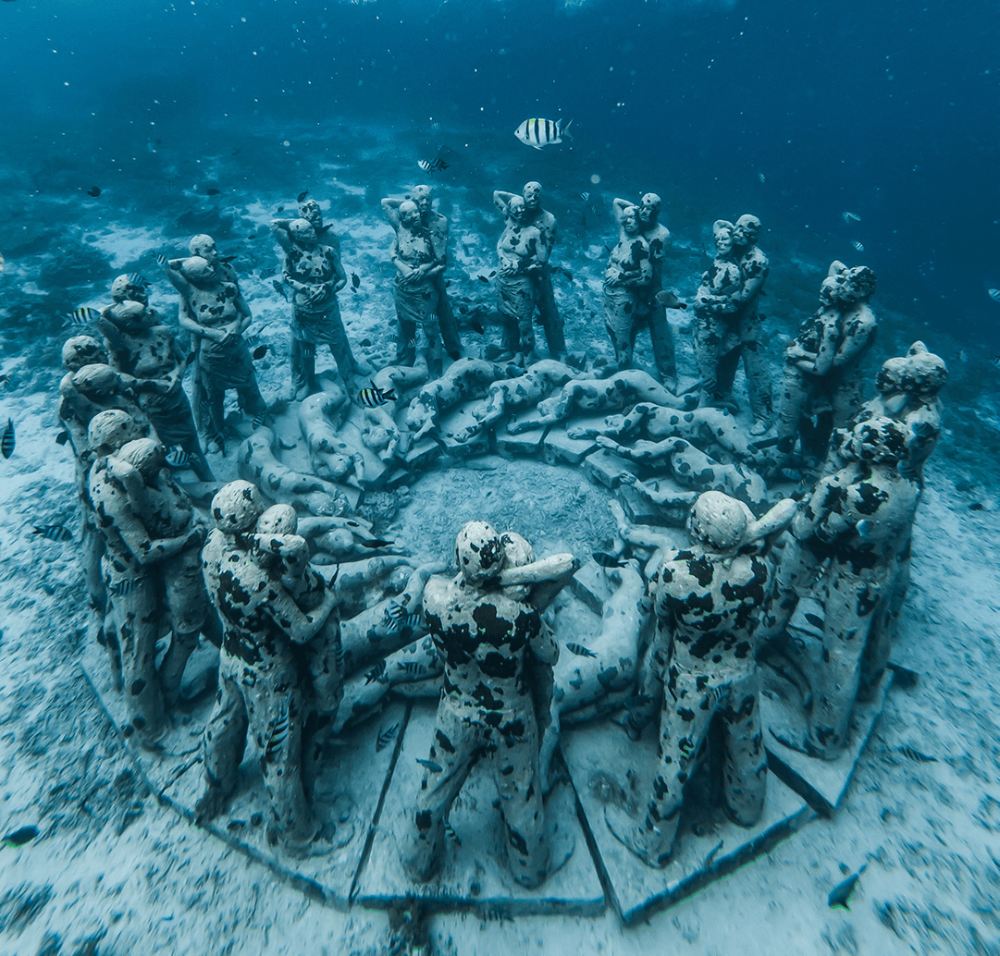

Jason DeCaires Taylor
É numa mistura salgada de fotógrafo subaquático, instrutor de mergulho e escultor que Jason DeCaires Taylor vive sua vida. Criador da primeira galeria com esculturas submarinas, na costa de Granada, nas Antilhas, seu trabalho foi reconhecido como uma das 25 maravilhas do mundo pela National Geographic. E não para por aí.
Nascido em 1974, o inglês cresceu entre Europa e a Ásia, passando boa parte da sua infância explorando e se aventurando nos recifes de corais da Malásia. Desde então, Jason desenvolveu uma ligação forte com o mar e um grande interesse pela conservação da natureza.
A ideia de criar galerias de arte em baixo d’água surgiu quando ele buscava dar um novo sentido para as suas esculturas. Com a natureza sempre presente na sua vida, Taylor passou a buscar uma forma de arte que além de interagir, também contribuísse com o meio ambiente.